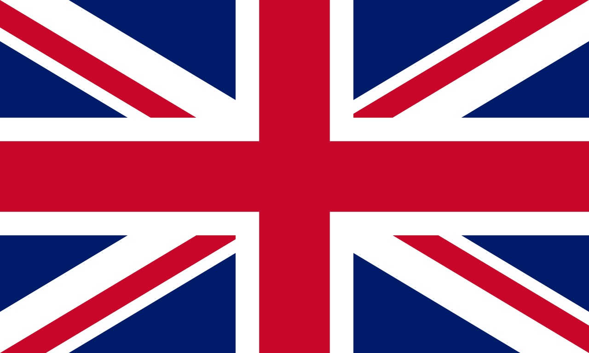

Reino Unido 
El Reino Unido (RU) es un país ubicado en el noroeste de Europa, formado por cuatro naciones constituyentes: Inglaterra, Escocia, Gales e Irlanda del Norte. Limita al norte con Escocia, al oeste con Gales, al este con Inglaterra, y al sur con el mar de Irlanda y el canal de la Mancha.